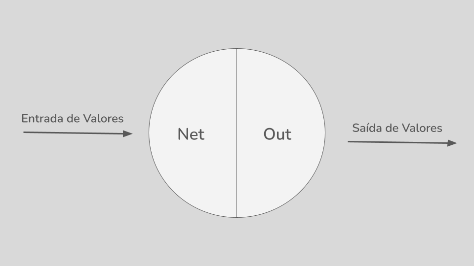

beta_0 = 1
beta_1 = 10
beta_2 = 0.02
beta_3 = 55
data_nnet = data.frame(
x_1 = rnorm(100, mean = 10, sd = 3),
x_2 = rexp(100, rate = 5),
x_3 = rgamma(100, shape = 1, rate = 0.4)
) |>
dplyr::mutate(
y = beta_0 + (beta_1*x_1) + (beta_2*x_2) + (beta_3*x_3) +
rnorm(100, mean = 0, sd = 1)
)2 Neuronios e Camadas
Dado as definições iniciais das regressões linear e logistica, assim como do metodo de gradiente descendente, podemos passar para a definiçãop de uma Rede Neural. Para um bom entendimento de como funciona uma rede, destricharemos em 3 etapas:
- Arquitetura
- Tipos
- Aplicação
Um neurônio em uma rede neural artificial é uma unidade computacional inspirada no funcionamento de um neurônio biológico. Ele recebe múltiplas entradas (inputs), realiza uma operação matemática para processar esses valores e gera uma saída (output). Essa operação geralmente envolve uma soma ponderada das entradas seguida por uma função de ativação, que transforma o valor resultante antes de enviá-lo à próxima camada da rede.
O neurônio humano é uma célula especializada no sistema nervoso, composta por dendritos, corpo celular (soma), axônio e terminais do axônio (sinapses). Os dendritos recebem sinais químicos e elétricos de outros neurônios, que se acumulam no corpo celular, onde esses sinais são integrados. Se a soma desses sinais ultrapassar um certo limiar, o neurônio gera um impulso elétrico, conhecido como potencial de ação. Esse impulso viaja pelo axônio até os terminais, onde é convertido novamente em sinal químico. Nessa etapa, neurotransmissores são liberados para se comunicar com outros neurônios através das sinapses, formando uma complexa rede de comunicação e processamento. Cada neurônio humano possui milhares de conexões (sinapses) com outros neurônios, o que permite um processamento de informações altamente paralelo e dinâmico, com adaptações complexas que envolvem neuroplasticidade ao longo do tempo.
Já um neurônio computacional, usado em redes neurais artificiais, é uma representação simplificada do neurônio humano. Ele possui uma estrutura mais básica, composta por entradas, uma soma ponderada e uma função de ativação. Cada entrada do neurônio computacional tem um peso associado, que representa a importância dessa entrada para o resultado final. O neurônio computacional calcula a soma ponderada das entradas, aplica uma função de ativação para transformar o resultado e então gera uma saída. Diferente do neurônio biológico, que pode transmitir informações de maneira complexa e em várias direções, o neurônio computacional apenas encaminha sua saída para os neurônios da próxima camada da rede.
Basicamento, podemos representar uma neuronio humano e computacional da seguinte forma

Um conjunto de neurônios humanos interconectados é conhecido como rede de neurônios ou rede neural. No cérebro humano, essas redes formam complexas interconexões chamadas de circuitos neurais, que são responsáveis pelo processamento de informações e pela comunicação entre diferentes partes do sistema nervoso.
No contexto computacional um conjunto de neurônios também é chamado de uma rede neural.
3 Estrutura Básica
Um neurónio é a estrura mais básica de uma rede neural. Ele recebe um valor, processa ele, e retorna outro valor que é passado para o neuronio seguinte.
Em uma linguagem matemática, seja um neurônio \(K\) \(x_1,x_2, ....,x_m\) variáveis, \(m+1\) entradas (inputs) e um vetor de pesos \(w_1,w_2, ..., w_m\).
- Bias Input
- O input \(x_0\) é definido como o valor constante \(+1\). Isso o torna o chamado Bias Input, que é utilizado para ajustar o valor de saida do neurônio independente dos damais valores de entrada. Esse termo permite que o neurônio retorne valores diferentes de 0 mesmo quando todos os valores de entrada são iguais a 0.
- Actual Inputs
- Os valores de entradas remanescente, vindo das variáveis \(x_1,x_2, ...x_m\) são chamadas de entradas verdadeiras (Actual Inputs), tendo seu próprio vetor de peso associado \(w_{k1}, w_{k2},..., w_{km}\)
- Soma Ponderada
- A soma dos valores de entrada ponderadas pelos pesos é realizada, dada por:
\[z_k = \phi(\sum^m_{j=0}w_{kj}x_j) + b\]
4 Camadas
Em rede neural, o fluxo dos dados percorre os neuronios atraves de determinados caminhos, chamados de Camadas.
Uma camada (layer) pode ser caracterizada como um conjunto de neuronios, onde neuronios de diferentes camadas possuem comunicação, porem neuronios de uma mesma camadas não possuem nenhuma ligação

Uma rede possui 3 camadas distintas: Entrada (Input), Oculta (Hidden) e Saida (Output)
- Camada de Entrada
- Se caracteriza como a primeira camada de uma rede e é responsável em receber os dados do conjunto de dados utilizado. No caso de um conjunto de dados estruturado, possuindo uma organização padrão de variáveis em colunas e observações em linhas, cada variável seria atribuido a um neuronio distinto, ou seja, se um conjunto de dados possui 10 diferentes variaveis, serão necessários 10 diferentes neuronios na camada de entrada. No caso de conjunto de dados não estruturados como imagens e sons, cada neuronio pode receber um pixel ou um determinado intervalo do som. Vale destacar que uma rede sempre vai possuir uma e somente uma camada de entrada
- Camadas Ocultas
- Se caracteriza como as camadas que estão entre a camada de entrada e a camadas de saída, e não possui um número fixo. Redes mais simples possuem entre 1 a 3 camadas ocultas. Para problemas mais complexos esse número aumenta. A definição do número de camadas ocultas pode se basear em 2 abordagems: Fixar ou Otimizar.
- Fixar o número de camadas ocultas significa definir um valor fixo antes de iniciar o treinamento do modelo. Essa abordagem é baseada em escolhas prévias, geralmente fundamentadas no conhecimento do problema ou em heurísticas. Redes simples, que resolvem problemas com poucos dados ou baixa complexidade, muitas vezes utilizam entre 1 e 3 camadas ocultas. Esse método é vantajoso em cenários onde se busca simplicidade no design do modelo, menor custo computacional e rapidez no desenvolvimento.
- Otimizar o número de camadas ocultas é uma abordagem que leva a observamos esse número como hiperparâmetro, e assim aplicar tecnicas de tuning para encontrar um número ótimo. Essa opção é utilizada quando não temos nenhum conhecimento a priori do preblema e redes que ja foram utilizadas em problemas semelhantes.
- Camada de Saida
- É a última camada de uma rede e é responsável em passar os valores finais preditos. Toda rede vai possuir uma e somente uma camada de saída, onde o número de neurônios dessa camada vai depender do contexto do problema. Em um problema de classificação, devemos ter um neuronio para cada classe. Já ára um problema de regressão, devemos definir um neurinio para cada dimensão, ou seja para uma regressão com a predição de apenas um valor (univariada) devemos ter apenas 1 neurônio, ja para regressão com \(m\) valores preditos (multivariada), devemos definir \(m\) neurônios nessa camada
5 Função de Ativação
Como definimos na seção “Estrutura Básica”, um neurônio é definido algebricamente como \[z_k = \phi(\sum^m_{j=0}w_{kj}x_j) + b\], onde \(phi\) é uma função chamada de função de ativação. Ela é responsável por transformar o valor bruto calculado por um neurônio (o somatório ponderado das entradas mais o viés) em uma saída que será transmitida para os neurônios da próxima camada. O principal objetivo dessa transformação é introduzir não-linearidade no modelo, permitindo que ele aprenda padrões complexos nos dados.
Sem uma função de ativação, a rede neural seria equivalente a uma combinação linear das entradas, independentemente de quantas camadas fossem adicionadas. Isso significa que ela só poderia resolver problemas simples e lineares. A introdução de não-linearidade torna possível a resolução de problemas mais desafiadores, como a classificação de dados que não podem ser separados por uma linha ou plano.
Atualmente, existem diversas funções de ativação já definidas, onde cada uma possui uma nicho específico de utilização. Listamos as mais conhecidas
Sigmoide
- \(f(x) = \frac{1}{1+e^{-x}}\)
- Transforma a saída para o entre intervalo 0 e 1, sendo ideal para tarefas de classificação binária.
- Extremamente popular em redes mais antigas, porém tem limitações como a saturação e o problema do “vanishing gradient”, fenômeno esse que se caracteriza quando a função de ativação gera gradientes tão pequenos, que diminuem ainda mais à medida que são propagados para camadas anteriores -> Colocar foto da função, sua equação
Tanh (Tangente Hiperbólica)
- \(f(x) = \frac{e^x-e^{-x}}{e^x+e^{-x}}\)
- Transforma a saída para o entre intervalo -1 e 1 -> Colocar foto da função, sua equação
ReLU (Rectified Linear Unit)
- \(f(x) = \max(0,x)\)
Leaky ReLu (ReLU Contaminada)
\(f(x) = \begin{cases} x, & \text{se } x>0 \\ \alpha x, & \text{se } x\leq 0 \end{cases}\)
\(\alpha\) é uma constante que irar ponderar os valores de x menores ou iguais a 0, podendo ser fixada antes do treinamento do modelo, ou classificada como um parâmetro, passando pela etapa de otimização
Softmax
- \(\sigma(z_i) = \frac{e^{z_i}}{\sum^L_{j=i}e^{zj}}\)
Vale destacar que uma função de ativação e função de custo são coisas DISTINTAS. Enquanto uma função de ativação é aplicada localmente em cada neurônio, uma função de custo é aplicada apenas na sáida final da rede, ou seja, no momento da predição de valores, tendo o objetivo de calcular o erro global da rede. Essa função é utilizada para a otimização dos pesos e vieses durante o treinamento. Resumidamente, a função de ativação transforma os sinais dentro da rede para capturar padrões, enquanto a função de custo avalia o erro final das previsões para guiar o aprendizado do modelo.
6 Backpropagation
O objetivo do Backpropagation é calcular as derivadas parciais \(\frac{\partial C}{\partial w}\) e \(\frac{\partial C}{\partial b}\), onde \(C\) é função de custo, \(w\) é o peso (weight) e \(b\) é o viés (bias). Para o método funcionar, precisamos definir duas suposições
- Generalização pela media
- A função de custo \(C\) pode ser reescrita como \(C = \frac{1}{n}\sum_xC_x\). Isso deve ser assumido por conta da forma que o método calcula as derivadas parciais \(\frac{\partial C}{\partial w}\) e \(\frac{\partial C}{\partial b}\), onde dado \(x\) o conjunto de dados de treinamento da iteração, temos na verdade as derivadas \(\frac{\partial C_x}{\partial w}\) e \(\frac{\partial C_x}{\partial b}\).
- Função de custo pode ser reescrita como uma função da saída (output) da rede
- Dado os neuronios da camada de saida \(k^L_1, k^L_2, ..., k^L_j\), e seus outputs \(a^L_1, a^L_2, ..., a^L_j\), a função de custo \(C\) pode ser reescrita como \(C = C(a^l)\)
6.1 Pesos e Vieses
Antes de entrar de fato nas equações e formas do método, devemos fazer definições importantes sobre a nomenclatura de certos parâmetros e suas caracteristicas
Quando falamos de pesos e vieses, há muita confusão sobre a função e aplicação de cada um, onde muitas pessoas utilizam esses termos como sinônimos, o que fortemente não é verdade.
A confusão entre pesos e vieses surge frequentemente porque ambos são parâmetros de uma rede neural que são ajustados durante o treinamento e determinam coletivamente o comportamento do modelo. No entanto, eles servem a propósitos e funções distintas.
Os pesos (weights) são fatores de multiplicação aplicados aos valores em cada neuronio e determinam a força e direção da relação entre os valores de entrada e de saída de um neurônio.
Já os vieses (bias) são fatores de soma e permitem o deslocamento da função de ativação, auxiliando que o modelo se ajuste melhor aos dados
Dado uma rede com uma função de ativação \(At\), temos o seguinte valor de saida de um determinado neurônio
\[z = At(w_i* x_i) + b\] Vemos que o peso \(w_i\) multiplica o valor de entrada \(x_i\), controlando a influência de \(x_i\) no neuronio atual. Já o vies \(b\) é somado ao valor retornado pela função de ativação, auxiliando o neuronio a melhor se ajustar aos dados
As principais diferenças podem resumidas em uma tabela
6.2 Equações
O método se baseia em 4 equações fundamentais
6.2.1 Equação para o erro na camada de saída
\[\delta^L_j = \frac{\partial C}{\partial a^L_j}\sigma´(z^L_j)\]
O primeiro termo a direta, \(\frac{\partial C}{\partial a^L_j}\) mensura o quão rápido a função de custo está se adaptando em relação ao j-ésimo neurônio de saída. Por exemplo, se a função custo não depender muito de um neuronio j em particular, portanto \(\delta^L_j\) será um valor pequeno
Já o segundo termo a direita, \(\sigma´(z^L_j)\), mensura o quão rápido a função de ativação \(\sigma\) esta mudando em relação a \(z^L_j\)
Na forma matricial a BP1 possui a seguinte forma
\[\sigma^L = \Delta_aC \odot \sigma´ (z^L)\] Onde, \(\Delta_aC\) é definido como o vetor que sias componentes são as derivadas parciais \(\frac{\partial C}{\partial a^L_j}\), para facilitar o entedimento, podemos expressar \(\Delta_aC\) como a taxa de variação de \(C\) em relação ao ativações de saída
6.2.2 Equação para o erro
A equação para o erro \(\delta^l\) em relação ao erro uam camada a frente, \(\delta^{l+1}\) é dado por
\[\delta^l = ((w^{l+1})^T\delta^{l+1})\odot\sigma´(z^l)\]
Onde \((w^{l+1})^T\) é a matriz transposta da matriz de pesos \(w^{l+1}\) para a \(l+1\)-ésima camada
6.2.3 Equação para a taxa de variação do custo em relação aos vieses
\[ \frac{\partial C}{\partial b^l_j} = \delta^l_j \tag{6.1}\]
Temos que o erro \(\delta^l_j\) é exatamente igual a taxa de variação \(\frac{\partial C}{\partial b^l_j}\). Isso se mostra como um ponto positivo, dado que já sabemos como calcular \(\delta^l_j\) como visto nas equações BP1 e BP2. Assim podemos escrever a BP3 como
\[\frac{\partial C}{\partial b} = \delta\]
Onde \(\delta\) está sendo calculado no mesmo neuronio do viés \(b\)
6.2.4 Equação para a taxa de variação do custo em relação aos pesos
\[\frac{\partial C}{\partial w^l_{jk}} = a^{l-1}_k\delta^l_j\]
6.3 Algoritmo
As funções definidas na seção passada provem uma forma de se calcular o gradiente da função de custo. Essas funções são utilizadas no algortimo do método que possui 5 passos fundamentais
- Input x
- O conjunto dados é introduzido a rede. No pensamento algebrico, o vetor \(X\) é introduzido a rede e atribuido como a ativação da camada de entrada
- Feedforward
- Para cada camada \(l = 2,3, ..., L\) calcula-se os valores retornado pelos neurônios \(z^l = w^la^{l-1}+b^l\), onde \(w^l\) é a matriz de peso para a camada \(l\), \(a^{l-1}\) é o valor de ativação da camada anterior, \(b^l\) é o vetor de vieses para a camada \(l\)
- Além disso, devemos reforçar que \(a^l = \sigma(z^l)\), onde \(\sigma\) é uma função de ativação
- Erro de Saída
- O erro na camada de saída é calculado, dado por \[\delta^L=\Delta_aC\odot\sigma´(z^L)\]
- \(\Delta_aC\) é o gradiente da função de custo C em relação ao valor de ativação \(a^L\)
- \(\sigma´(z^L)\) é a derivada da função de ligação no valor de ativação \(z^l\)
- Isso quantifica o quanto a saída da rede (ativações) se desvia da saída desejada.
- Propagação do Erro
- Para cada camada \(l = L-1,L-2, ...,2\), o erro para a camada é calculado, dado por \[\delta^l = ((w^{l+1})^T\delta^{l+1})\odot\sigma´(z^l)\]
- \((w^{l+1})^T\delta^{l+1}\) propaga o erro para trás na rede
- \(\sigma´(z^l)\) ajusta o erro baseado na função de ativação
- Nessa etapa o erro é propagado para trás, dando origem ao nome do método Backpropagation
- Calculo dos Gradientes
- No último passo do algoritmo, os gradientes em relação aos pesos e vieses são calculados
- Para o peso (weight) temos \[\frac{\partial C}{\partial w^l_{jk}} = a^{l-1}_k\delta^l_j\]
- Já para os vieses (bias) \[\frac{\partial C}{\partial b^l_{j}} = \delta^l_j\]
- Os valores calculados para cada gradiente são utilizados no momento da otimização via gradiente descendente, minimizando a função de custo
7 GD e BCK em Conjunto
O GD e BCK fazem um trabalho de turma
Relembrando, Gradient Descent é um algoritmo usado para minimizar uma função, neste caso, a função de custo \(C(\theta)\), onde \(\theta\) representa a matriz de parâmetros: pesos e vieses
- O algoritmo atualiza os parâmetros iterativamente na direção do gradiente negativo da perda em relação aos parâmetros: \[\theta^{(t+1)} = \theta(t) -\eta\nabla J(\theta^{(t)})\]
O desafio mora no calculo do gradiente \(\nabla_{\theta}L(\theta)\), que é aí que se utiliza o Backpropagation
Backpropagation é um algoritmo para calcular os gradientes da função de custo em relação aos pesos e vieses da rede de forma eficiente usando a regra da cadeia. Funciona camada por camada, começando pela camada de saída (final da rede) e retrocedendo em direção à entrada.
Em conjunto eles, temos a seguinte sequencia
No primeiro passo, os dados são introduzidos pela primeira vez na rede, onde os pesos e vieses são inicializaods de maneira aleatória. Ao final da primeira iteração, as predições iniciais são retornadas, possibilitando a utilização da função de custo
O backpropagation calcula o quanto uma variação nos pesos e vieses afetará a função de custo
O Gradiente Descendente atualiza os valores de pesos e vieses baseado nesses gradientes, buscando o valor que minimiza a função de perda
Se repete o ciclo por múltiplas iterações, chamadas de epochs até que a função de custo convirja para o mínimo global
7.1 Exemplo
O exemplo a seguir foi desenvolvido para ilustrar o treinamento de uma rede neural utilizando os algoritmos de Gradiente Descendente e Backpropagation.
O problema abordado é do tipo regressão, com o objetivo de prever um valor numérico. A estrutura da rede foi definida da seguinte maneira: a camada de entrada possui 3 features, a camada oculta contém 2 neurônios, e a camada de saída é composta por 1 neurônio, responsável por gerar a predição final.
A função de ativação utilizada é a ReLU com a função de custo Erro Quadrático Médio
Para facilitar os calculos, utilizaremos a seguinte nomenclatura para um neuronio

O funcionamento de um neurônio pode ser dividido em duas etapas principais. A primeira etapa corresponde à soma ponderada dos valores de entrada, calculada como \(Net = \sum_{i=1}^Ix_iw_i\), onde \(x_i\) são os valores da entrada e \(w_i\) os respectivos pesos, e Net representa o resultado dessa operação
A segunda etapa consiste na aplicação da função de ativação ao valor retornado por Net, gerando a saída do neurônio. Esse processo é expresso como \(Out = Fa(Net) + Bias\), onde \(Fa\) é a função de ativação escolhida e o termo Bias ajusta o resultado final
Essa separação entre as etapas de cálculo da soma ponderada (Net) e a aplicação da função de ativação (Out) é crucial para a aplicação da regra da cadeia durante o cálculo dos gradientes na etapa de backpropagation.
Conceitualmente, a rede possui a seguinte arquitetura
 É importante ressaltar a nomenclatura utilizada, \(i\) refere-se a os inputs, \(h\) aos neurônios na camada oculta e \(o\) ao neurônio na camada de saída. Para os pesos, de forma generalizada um \(w_{xyz}\) representa um peso atrelado x-ésimo neuronio de uma camada anterior, ao y-ésimo neurônio z-ésima camada, onde a rede possui um número de camadas indo de 0 (camada de entrada) a L (camada oculta). Por exemplo, um peso \(w_212\) representa um peso que liga o segundo neuronio da camada 1 ao primeiro neuronio da camada 2.
É importante ressaltar a nomenclatura utilizada, \(i\) refere-se a os inputs, \(h\) aos neurônios na camada oculta e \(o\) ao neurônio na camada de saída. Para os pesos, de forma generalizada um \(w_{xyz}\) representa um peso atrelado x-ésimo neuronio de uma camada anterior, ao y-ésimo neurônio z-ésima camada, onde a rede possui um número de camadas indo de 0 (camada de entrada) a L (camada oculta). Por exemplo, um peso \(w_212\) representa um peso que liga o segundo neuronio da camada 1 ao primeiro neuronio da camada 2.
7.2 Definindo os Valores
Para o exemplo,

O valor verdadeiro é 11

7.3 Forward Pass
Para começar, precisamos da predição inicial da rede dado os pesos e vieses aleatórios de inicialização.
- Camada Oculta
O primeiro passo é calcular os valores passados para a camada oculta, calculando os valores de Net e Out
Para \(h_1\) temos
\[Net_{h_1} = i_1w_{111} + i_2w_{211} + i_3w_{311}\] \[Net_{h_1} = 3*0.5 + 9*0.6 + 21*0.4 = 15.5\] \[Out_{h_1} = Fa(Net_{h_1}) + Bias_1\] \[Out_{h_1} = max(0;15.5) + 0.5 = 16\]
Repetindo os mesmos passos para \(h_2\)
\[Net_{h_2} = i_1w_{121} + i_2w_{221} + i_3w_{321}\] \[Net_{h_2} = 3*0.7 + 9*0.5 + 21*0.6 = 19.2\] \[Out_{h_2} = Fa(Net_{h_2}) + Bias_1\] \[Out_{h_2} = max(0;19.2) + 0.5 = 19.7\]
Com valores de \(h_1\) e \(h_2\) calculados, podemos calcular o valor de \(o_1\)
\[Net_{o_1} = h_1w_{112} + h_2w_{212}\] \[Net_{o_1} = 16 * 0.4 + 19.7 * 0.9 = 24.1\] \[Out_{o_1} = Fa(Net_{o_1}) + Bias_2\] \[Out_{o_1} = max(0;24.1) + 0.3 = 24.4\]
7.4 Calculando o Erro Total
Com o valor predito pelo modelo, podemos calcular o Erro, lembrando que o valor verdadeiro é 11. Para o erro, a função de custo utilizada é o Erro Quadrático Médio, dado por
\[E_{total} = \sum\frac{1}{2}(y-\hat y)^2\]
Dica
O \(\frac{1}{2}\) é incluido para que o expoente seja cancelado durante o calculado da derivada.
Assim, temos o seguinte erro
\[E_{total} = \frac{1}{2}(11-24.4)^2 = 89.8\]
7.5 The Backwards Pass
O objetivo do backpropagation é utilizar o erro calculado na saída da rede para ajustar os valores dos pesos e vieses de maneira eficiente. Esse ajuste é feito iterativamente, com o intuito de minimizar o erro ao longo do processo de treinamento, levando a uma melhoria contínua no desempenho da rede. Em essência, o backpropagation aplica a regra da cadeia para propagar o erro da camada de saída até as camadas iniciais, identificando como cada peso e viés contribui para o erro, e, em seguida, atualizando esses parâmetros para reduzir gradativamente o valor do erro.
Para a atualização dos valores dos pesos e vieses, utilizamos o seguinte método:
Para atualizar o valor de um certo peso, devemos calcular sua constribuição para o erro do total da rede. Por exemplo, se estamos trabalhando com o peso \(w_{112}\), sua contribuição é dado pela seguinte derivada
\[\frac{\partial E_{total}}{\partial w_{112}}\]
O cálculo dessa derivada é realizada através da regra da cadeia
\[\frac{\partial E_{total}}{\partial w_{112}} = \frac{\partial E_{total}}{\partial out_{o_{1}}} \times \frac{\partial out_{o_{1}}}{\partial net_{o_{1}}} \times \frac{\partial net_{o_{1}}}{\partial w_{112}}\]
Para o cálculo dessas derivadas, devemos antes definir claramente cada função.
- \(E_{total}\)
- É a função de custo definida para cada rede. No exemplo estudado, a função de custo definida foi o EQM, dada por \(E_{total} = \sum\frac{1}{2}(y-\hat y)^2 = \sum\frac{1}{2}(y-out_{o_1})^2\)
- \(Out_{o}\)
- A função Out de um determinado neurônio são os valores retornado por Net aplicado na função de ativação, dado por \(Out_{} = Fa(Net) + Bias\)
- Para o exemplo, \(Out_{o_1} = ReLU(Net_{o_1}) + Bias_2\)
- \(Net_{o}\)
- A função Net é etapa da soma ponderada, onde os valores
- Para o exemplo, \(Net_{o_1} = Out_{h_1}w_{112} + Out_{h_2}w_{212}\)
Com cada função devidamente definida, podemos calcular as derivadas parciais
\[\frac{\partial E_{total}}{\partial out_{o_{1}}}= -(y-out_{o_1})\]
\[\frac{\partial out_{o_{1}}}{\partial net_{o_{1}}} = \begin{cases} 0 & \text{se } net_{o_1} < 0, \\ 1 & \text{se } net_{o_1} > 0. \end{cases}\]
\[\frac{\partial net_{o_{1}}}{\partial w_{112}} = Out_{h_1}\]
Assim
\[\frac{\partial E_{total}}{\partial w_{112}} = -(y-out_{o_1}) \times \begin{cases} 0 & \text{se } net_{o_1} < 0, \\ 1 & \text{se } net_{o_1} > 0 \end{cases} \times Out_{h_1} = -(11 - 24.4) \times 1 \times 16 = 214.4\]
Com o valor calculado, podemos finalmente atualizar o valor de \(w_{112}\). A atualização é dada por
\[w_{112}^+ = w_{112} - \frac{\partial E_{total}}{\partial w_{112}} = 0.4 - 214.4 = -214\]
Veremos mais pra frente o conceito de tunagem de hiperparametros, onde um deles é a taxa de aprendizado (learning rate), esse parametro é utilizado para ajustar a magnitude do valor atualizado por iteração. Utilizando ele, a atualização é dada por \[w_{112}^+ = w_{112} - \alpha \frac{\partial E_{total}}{\partial w_{112}}\] onde \(\alpha\) é um valor que deve ser tunado (processo semelhante a otimização)
8 Simulação de Redes Neurais
Agora que já entendemos o funcionamento matemático de uma rede neural feedforward, vamos colocar a teoria em prática com simulações em R. O objetivo é:
Criar uma rede simples, com apenas uma camada oculta (SLP — Single Layer Perceptron).
Compará-la com modelos de regressão linear.
Generalizar o código para redes com múltiplas camadas ocultas e compará-las novamente.
8.1 Dados Simulados
1.1 Preparanda a simulação
Começaremos gerando um conjunto de dados sintético, onde a variável resposta \(y\) é uma combinação linear de três variáveis \(x_1,x_2,x_3\) mais um erro aleatório (que segue uma distribuição Normal(0,1))
8.2 Simulação Rede SLP
Para a primeira rodada de simulação, utilizamos uma rede simples, com apenas uma camada oculta (uma single layer perceptron), com as seguintes definições
1 camada oculta
2 neurônios
Função de ativação: ReLU
Função de custo: Erro Quadrático Médio (EQM)
Para a construção e treinamento da rede, as seguintes funções foram construídas. É importante perceber que tais funções servem apenas para a construção de redes com 1 camada oculta. Mais adinate veremos o cófigo utilizado para redes com mais 1 camada oculta
Funções básicas
# Função de ativação ReLU
relu = function(x) pmax(0, x)
relu_deriv = function(x) ifelse(x > 0, 1, 0)
# Função de custo EQM
eqm = function(y, y_hat) (y-y_hat)^2/2
eqm_deriv = function(y, y_hat) -(y-y_hat)Inicialização da rede
init_network = function(input_size, hidden_size, output_size) {
list(
W1 = matrix(runif(input_size * hidden_size, -0.5, 0.5), nrow = hidden_size),
b1 = matrix(0, nrow = hidden_size, ncol = 1),
W2 = matrix(runif(hidden_size * output_size, -0.5, 0.5), nrow = output_size),
b2 = matrix(0, nrow = output_size, ncol = 1)
)
}Passo forward e backward
# Forward e backward
forward_backward = function(network, x, y) {
# Forward
z1 = network$W1 %*% x + network$b1
a1 = relu(z1)
z2 = network$W2 %*% a1 + network$b2
y_pred = z2
# Erro e perda
loss = mean((y_pred - y)^2)
# Backward (gradientes)
dL_dz2 = 2 * (y_pred - y)
dL_dW2 = dL_dz2 %*% t(a1)
dL_db2 = dL_dz2
dL_da1 = t(network$W2) %*% dL_dz2
dL_dz1 = dL_da1 * relu_deriv(z1)
dL_dW1 = dL_dz1 %*% t(x)
dL_db1 = dL_dz1
list(
loss = loss,
gradients = list(W1 = dL_dW1, b1 = dL_db1, W2 = dL_dW2, b2 = dL_db2)
)
}Treinamento
# Treinamento
train_nn = function(X, Y, hidden_size = 5, epochs = 1000, lr = 0.01) {
X = t(X)
Y = t(Y)
input_size = nrow(X)
output_size = nrow(Y)
network = init_network(input_size, hidden_size, output_size)
for (epoch in 1:epochs) {
total_loss = 0
for (i in 1:ncol(X)) {
x_i = X[, i, drop = FALSE]
y_i = Y[, i, drop = FALSE]
fb = forward_backward(network, x_i, y_i)
total_loss = total_loss + fb$loss
# Atualização dos pesos
network$W1 = network$W1 - lr * fb$gradients$W1
network$b1 = network$b1 - lr * fb$gradients$b1
network$W2 = network$W2 - lr * fb$gradients$W2
network$b2 = network$b2 - lr * fb$gradients$b2
}
if (epoch %% 100 == 0) {
cat(sprintf("Epoch %d, Loss: %.4f\n", epoch, total_loss / ncol(X)))
}
}
return(network)
}Predição
# Fazer predição
predict_nn = function(network, x) {
x = t(x)
y_pred = 0
for(i in 1:ncol(x)) {
z1 = network$W1 %*% x[,i] + network$b1
a1 = relu(z1)
z2 = network$W2 %*% a1 + network$b2
y_pred[i] = z2
}
return(y_pred)
}Nesta etapa, realizamos a separação dos dados em amostras de treino e teste por meio da função initial_split() do pacote rsample. A base de treino será utilizada para estimar os parâmetros da rede neural, enquanto a base de teste servirá para avaliar sua capacidade preditiva fora da amostra. A proporção de divisão foi de 75% para treinamento e 25% para teste
sample_desing = rsample::initial_split(data_nnet)
data_nnet_training = rsample::training(sample_desing)
data_nnet_testing = rsample::testing(sample_desing)
trained_net =
train_nn(X = data_nnet_training[,-4],
Y = data_nnet_training[,4],
hidden_size = 2,
lr = 0.00001,
epochs = 2000)Epoch 100, Loss: 49046.1666
Epoch 200, Loss: 40008.9979
Epoch 300, Loss: 33314.0831
Epoch 400, Loss: 28354.3525
Epoch 500, Loss: 24680.0784
Epoch 600, Loss: 21958.0946
Epoch 700, Loss: 19941.5860
Epoch 800, Loss: 18447.7073
Epoch 900, Loss: 17341.0035
Epoch 1000, Loss: 16521.1273
Epoch 1100, Loss: 15913.7391
Epoch 1200, Loss: 15463.7669
Epoch 1300, Loss: 15130.4125
Epoch 1400, Loss: 14883.4513
Epoch 1500, Loss: 14700.4926
Epoch 1600, Loss: 14564.9488
Epoch 1700, Loss: 14464.5315
Epoch 1800, Loss: 14390.1369
Epoch 1900, Loss: 14335.0210
Epoch 2000, Loss: 14294.1875predict_nnet_values = predict_nn(trained_net, data_nnet_testing[,-4])Aqui ajustamos dois modelos de regressão linear múltipla sobre a base de treino, com o objetivo de comparar seu desempenho preditivo com a rede neural treinada anteriormente.
O primeiro modelo (lm_model_inter) foi estimado sem intercepto (-1 na fórmula). Já o segundo modelo (lm_model_com_inter) inclui o intercepto. Vale relembrar que os dados simulados possuem intercepto, e portanto esperamos ver um mlehor desempenho para o modelo que possui intercepto
lm_model_inter = lm(y ~ -1 + x_1 + x_2 + x_3, data = data_nnet_training)
lm_model_com_inter = lm(y ~ x_1 + x_2 + x_3, data = data_nnet_training)Após o ajuste, utilizamos a função predict() para gerar as predições de ambos os modelos sobre a base de teste, obtendo assim as estimativas lineares correspondentes para comparação direta com as previsões da rede neural.
predict_lm_values_int = predict(lm_model_inter, newdata = data_nnet_testing[,-4])
predict_lm_values_com_int = predict(lm_model_com_inter, newdata = data_nnet_testing[,-4])predict_values = data.frame(nnet = predict_nnet_values,
lm_sem_int = predict_lm_values_int,
lm_com_int = predict_lm_values_com_int,
real = data_nnet_testing$y)
predict_values |>
tidyr::pivot_longer(-real) |>
dplyr::group_by(name) |>
dplyr::summarise(eqm = mean((real - value)^2))# A tibble: 3 × 2
name eqm
<chr> <dbl>
1 lm_com_int 1.27
2 lm_sem_int 1.46
3 nnet 22520. Os erros quadráticos médios (EQM) apresentados para os três modelos são muito próximos, todos na faixa de aproximadamente 1.28 a 1.39, indicando que todos têm desempenho bastante similar na predição dos dados avaliados.
O modelo de regressão linear com intercepto (lm_com_int) apresenta o menor EQM (≈ 1.29), sugerindo que é o que melhor captura a relação entre as variáveis explicativas e a resposta, o que ja era esperado devido aos dados gerados, que possuem intercepto (\(\beta_0 = 1\))
O modelo linear sem intercepto (lm_sem_int) tem EQM ligeiramente maior (≈ 1.39), indicando uma leve perda de ajuste ao forçar o modelo a passar pela origem, o que pode não ser adequado para os dados simulados.
A rede neural simples (nnet) apresenta desempenho intermediário (EQM ≈ 1.34), próximo dos modelos lineares, o que indica que, para esse conjunto de dados gerados por uma relação linear, a rede neural consegue capturar a estrutura subjacente com boa eficiência, embora não necessariamente supere o modelo linear com intercepto.
Neste cenário, em que os dados são simulados a partir de uma função linear com intercepto e ruído normal, o modelo linear clássico com intercepto se mostra mais adequado e eficiente para predição, enquanto a rede neural e o modelo linear sem intercepto apresentam desempenho comparável, porém ligeiramente inferior.
8.3 Simulação Rede com múltiplas camadas ocultas
Com base no codigo escrito, podemos aprimora-lo e construir uma rede generalizada
Inicialização de múltiplas camadas
# Inicialização da rede com múltiplas camadas ocultas
generalized_init_network = function(layer_sizes) {
L = length(layer_sizes) - 1
weights = list()
for (l in 1:L) {
weights[[paste0("W", l)]] = matrix(runif(layer_sizes[l+1] * layer_sizes[l], -0.5, 0.5),
nrow = layer_sizes[l+1])
weights[[paste0("b", l)]] = matrix(0, nrow = layer_sizes[l+1], ncol = 1)
}
return(weights)
}Passo forward e backward generalizado
# Forward e backward para múltiplas camadas
generalized_forward_backward = function(network, x, y) {
L = length(network) / 2
activations = list(x)
pre_activations = list()
# Forward
for (l in 1:L) {
z = network[[paste0("W", l)]] %*% activations[[l]] + network[[paste0("b", l)]]
pre_activations[[l]] = z
a = if (l == L) z else relu(z)
activations[[l + 1]] = a
}
y_pred = activations[[L + 1]]
loss = mean((y_pred - y)^2)
# Backward
gradients = list()
delta = 2 * (y_pred - y)
for (l in L:1) {
a_prev = activations[[l]]
gradients[[paste0("W", l)]] = delta %*% t(a_prev)
gradients[[paste0("b", l)]] = delta
if (l > 1) {
delta = t(network[[paste0("W", l)]]) %*% delta
delta = delta * relu_deriv(pre_activations[[l - 1]])
}
}
return(list(loss = loss, gradients = gradients, activations = activations))
}Treinamento generalizado
# Treinamento da rede
generalized_train_nn = function(X, Y, hidden_layers = c(5, 5), epochs = 1000, lr = 0.01) {
X = t(X)
Y = t(Y)
input_size = nrow(X)
output_size = nrow(Y)
layer_sizes = c(input_size, hidden_layers, output_size)
network = generalized_init_network(layer_sizes)
for (epoch in 1:epochs) {
total_loss = 0
for (i in 1:ncol(X)) {
x_i = X[, i, drop = FALSE]
y_i = Y[, i, drop = FALSE]
fb = generalized_forward_backward(network, x_i, y_i)
total_loss = total_loss + fb$loss
# Atualiza pesos
for (name in names(fb$gradients)) {
network[[name]] = network[[name]] - lr * fb$gradients[[name]]
}
}
if (epoch %% 100 == 0) {
cat(sprintf("Epoch %d, Loss: %.4f\n", epoch, total_loss / ncol(X)))
}
}
return(network)
}Predição com múltiplas camadas
# Predição com múltiplas camadas
generalized_predict_nn = function(network, X) {
X = t(X)
L = length(network) / 2
Y_pred = matrix(0, nrow = nrow(network[[paste0("W", L)]]), ncol = ncol(X))
for (i in 1:ncol(X)) {
a = X[, i, drop = FALSE]
for (l in 1:L) {
z = network[[paste0("W", l)]] %*% a + network[[paste0("b", l)]]
a = if (l == L) z else relu(z)
}
Y_pred[, i] = a
}
return(t(Y_pred))
}trained_net = generalized_train_nn(X = data_nnet_training[,-4] |> as.matrix(),
Y = data_nnet_training[,4] |> as.matrix(),
hidden_layers = c(2,2),
lr = 0.000001,
epochs = 1100)Epoch 100, Loss: 3.5709
Epoch 200, Loss: 2.4875
Epoch 300, Loss: 1.8989
Epoch 400, Loss: 1.5692
Epoch 500, Loss: 1.3782
Epoch 600, Loss: 1.2632
Epoch 700, Loss: 1.1914
Epoch 800, Loss: 1.1449
Epoch 900, Loss: 1.1138
Epoch 1000, Loss: 1.0926
Epoch 1100, Loss: 1.0777predict_generalized_nnet_values = generalized_predict_nn(trained_net, data_nnet_testing[,-4])predict_values = data.frame(nnet = predict_nnet_values,
generalized_nnet = predict_generalized_nnet_values,
lm_sem_int = predict_lm_values_int,
lm_com_int = predict_lm_values_com_int,
real = data_nnet_testing$y)
predict_values |>
tidyr::pivot_longer(-real) |>
dplyr::group_by(name) |>
dplyr::summarise(eqm = mean((real - value)^2))# A tibble: 4 × 2
name eqm
<chr> <dbl>
1 generalized_nnet 1.29
2 lm_com_int 1.27
3 lm_sem_int 1.46
4 nnet 22520. 9 Dados Brasileirão
df_brasileirao = readxl::read_xlsx("datasets/2024_Brasileirao.xlsx")
# 2. Aplicar one-hot encoding em todas as variáveis categóricas
df_numeric = df_brasileirao |>
dplyr::mutate(
dplyr::across(
c(Sc, Libwin, Stadium, Holds),
~dplyr::case_when(. == "Yes" ~ 1,
. == "No" ~ 0)
)
) |>
dplyr::select(-Season, -Club, -Hometown, -Label) |>
fastDummies::dummy_cols(remove_first_dummy = FALSE,
remove_selected_columns = TRUE)
# 3. Garantir que tudo seja numérico
df_numeric = df_numeric |>
dplyr::mutate(across(everything(), as.numeric)) |>
dplyr::relocate(Ratio, .before = "Sc") |>
dplyr::select(-Fifawc_No, -"Homestate_Minas Gerais", -"Homestate_Rio de Janeiro") rede_neural_brasileirao_1 = generalized_train_nn(X = df_numeric[,-1] |> as.matrix(),
Y = df_numeric[,1] |> as.matrix(),
hidden_layers = c(2),
lr = 0.0003,
epochs = 2000)Epoch 100, Loss: 0.0350
Epoch 200, Loss: 0.0045
Epoch 300, Loss: 0.0024
Epoch 400, Loss: 0.0022
Epoch 500, Loss: 0.0022
Epoch 600, Loss: 0.0022
Epoch 700, Loss: 0.0022
Epoch 800, Loss: 0.0022
Epoch 900, Loss: 0.0022
Epoch 1000, Loss: 0.0022
Epoch 1100, Loss: 0.0022
Epoch 1200, Loss: 0.0022
Epoch 1300, Loss: 0.0022
Epoch 1400, Loss: 0.0022
Epoch 1500, Loss: 0.0022
Epoch 1600, Loss: 0.0022
Epoch 1700, Loss: 0.0022
Epoch 1800, Loss: 0.0022
Epoch 1900, Loss: 0.0022
Epoch 2000, Loss: 0.0022rede_neural_brasileirao_2 = generalized_train_nn(X = df_numeric |>
dplyr::select(Gd, "Homestate_São Paulo") |>
as.matrix(),
Y = df_numeric[,1] |> as.matrix(),
hidden_layers = c(2),
lr = 0.0003,
epochs = 3000)Epoch 100, Loss: 0.0234
Epoch 200, Loss: 0.0190
Epoch 300, Loss: 0.0156
Epoch 400, Loss: 0.0129
Epoch 500, Loss: 0.0108
Epoch 600, Loss: 0.0091
Epoch 700, Loss: 0.0077
Epoch 800, Loss: 0.0066
Epoch 900, Loss: 0.0058
Epoch 1000, Loss: 0.0051
Epoch 1100, Loss: 0.0045
Epoch 1200, Loss: 0.0041
Epoch 1300, Loss: 0.0037
Epoch 1400, Loss: 0.0034
Epoch 1500, Loss: 0.0031
Epoch 1600, Loss: 0.0029
Epoch 1700, Loss: 0.0027
Epoch 1800, Loss: 0.0025
Epoch 1900, Loss: 0.0024
Epoch 2000, Loss: 0.0023
Epoch 2100, Loss: 0.0022
Epoch 2200, Loss: 0.0021
Epoch 2300, Loss: 0.0020
Epoch 2400, Loss: 0.0020
Epoch 2500, Loss: 0.0019
Epoch 2600, Loss: 0.0018
Epoch 2700, Loss: 0.0018
Epoch 2800, Loss: 0.0017
Epoch 2900, Loss: 0.0017
Epoch 3000, Loss: 0.0017rede_neural_brasileirao_3 = generalized_train_nn(X = df_numeric |>
dplyr::select(Gd) |>
as.matrix(),
Y = df_numeric[,1] |> as.matrix(),
hidden_layers = c(2),
lr = 0.0003,
epochs = 3000)Epoch 100, Loss: 0.0350
Epoch 200, Loss: 0.0045
Epoch 300, Loss: 0.0024
Epoch 400, Loss: 0.0022
Epoch 500, Loss: 0.0022
Epoch 600, Loss: 0.0022
Epoch 700, Loss: 0.0022
Epoch 800, Loss: 0.0022
Epoch 900, Loss: 0.0022
Epoch 1000, Loss: 0.0022
Epoch 1100, Loss: 0.0022
Epoch 1200, Loss: 0.0022
Epoch 1300, Loss: 0.0022
Epoch 1400, Loss: 0.0022
Epoch 1500, Loss: 0.0022
Epoch 1600, Loss: 0.0022
Epoch 1700, Loss: 0.0022
Epoch 1800, Loss: 0.0022
Epoch 1900, Loss: 0.0022
Epoch 2000, Loss: 0.0022
Epoch 2100, Loss: 0.0022
Epoch 2200, Loss: 0.0022
Epoch 2300, Loss: 0.0022
Epoch 2400, Loss: 0.0022
Epoch 2500, Loss: 0.0022
Epoch 2600, Loss: 0.0022
Epoch 2700, Loss: 0.0022
Epoch 2800, Loss: 0.0022
Epoch 2900, Loss: 0.0022
Epoch 3000, Loss: 0.0022predicao_rede_neural_brasileirao_1 =
generalized_predict_nn(
rede_neural_brasileirao_1,
df_numeric[,-1] |> as.matrix()
)
predicao_rede_neural_brasileirao_2 =
generalized_predict_nn(
rede_neural_brasileirao_2,
df_numeric |>
dplyr::select(Gd, "Homestate_São Paulo") |>
as.matrix()
)
predicao_rede_neural_brasileirao_3 =
generalized_predict_nn(
rede_neural_brasileirao_3,
df_numeric |>
dplyr::select(Gd) |>
as.matrix()
)